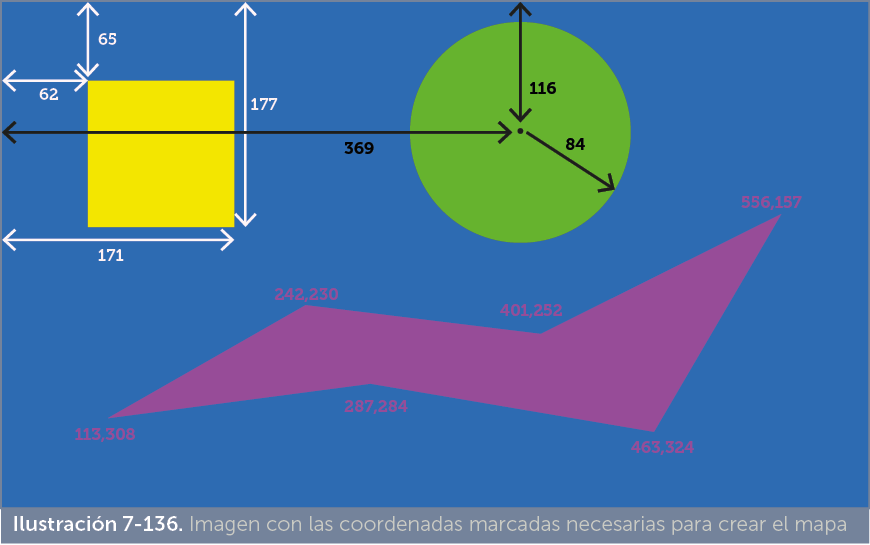

Las imágenes son fundamentales para que una página web sea más atractiva. Son el primer contenido no textual que se planteó poder incorporar al estándar HTML. Prácticamente no hay páginas sin imágenes.
Los navegadores tienen capacidad de mostrar imágenes, pero sólo las que pertenezcan a tipos concretos. Los tipos de imágenes reconocidos por la mayoría de navegadores son:
Descartando a las imágenes SVG, el tamaño en disco de las imágenes puede ser mayor o menor dependiendo de su tamaño y su compresión. De modo que un tamaño grande implica más tardanza al cargar la página, pero una mayor nitidez en la imagen.
Las imágenes son fundamentales en las páginas web, su elección resulta vital para la estética de la misma, nunca se considera un mero acompañamiento ya que el impacto visual y las sensaciones sobre la profesionalidad de la página siempre le consiguen las imágenes con ayuda de la tipografía (pero ahí ya entra el lenguaje CSS) y la disposición o maquetación (para lo que también necesitamos CSS).
Para minimizar el efecto de la incompatibilidad de algunos formatos de imagen se dispone del elemento picture que se explica más adelante.
Las imágenes se colocan mediante la etiqueta img. El atributo src indica la URL (relativa o absoluta) a la imagen. Ejemplo:
<img src=”imagenes/boton.gif”> |
img es una etiqueta sin cierre, la imagen se coloca directamente en la posición de esta etiqueta. Se la considera como texto al maquetarla. De modo que aparece entre el texto si ponemos la etiqueta entre el texto. Colocar de forma adecuada las imágenes respecto al texto es todo un arte que se consigue (una vez más) con ayuda de CSS.
|
atributo |
significado |
|
alt |
Obligatorio. Indica un texto alternativo. Ese texto aparece cuando la imagen no se ha podido cargar (o durante la carga). También suele aparecer cuando arrimamos el cursor a la imagen a fin de informarnos sobre ella. Es un texto también tenido en cuenta por los buscadores a fin de identificar lo que muestra la imagen. Deberíamos tomarnos este atributo como obligatorio |
|
width |
Anchura de la imagen. No es aconsejable su uso, ya que si la ampliamos no se verá en buena calidad y si la reducimos estaremos cargando una imagen grande para luego mostrarla en pequeño; sería más inteligente reducirla primero con un editor de imágenes. En cualquier caso es importante utilizar este atributo (junto con height) para que el navegador sepa de antemano el tamaño de la imagen y así que prepare la página correctamente. De este modo si la imagen no se carga, al menos veremos el rectángulo que la misma ocuparía y la página no se desbarata. |
|
height |
Altura de la imagen. Tiene las mismas connotaciones que el atributo anterior. |
HTML5 introdujo un nuevo elemento llamado picture para dar mayor versatilidad al uso de imágenes. El navegador Internet Explorer no reconoce este elemento, pero no es un problema, ya todos los elementos picture incorporan dentro elementos de tipo img.
El elemento picture se trata, en realidad, de un contenedor que dentro posee elementos capaces de mostrar imágenes. Concretamente puede contener elementos de tipo source y elementos de tipo img.
La idea es mostrar un tipo u otro de imágenes dependiendo de una serie de condiciones. Por ejemplo, podremos mostrar imágenes de alta resolución si la pantalla las soporta o mostrar imágenes en formatos especiales si el navegador las reconoce.
Este tipo de acciones, antes de la aparición de HTML5, estaban relegadas a JavaScript. Con picture podemos realizarlas desde el propio HTML.
Permite mostrar medios (imágenes, audio, vídeo, etc.) en una página web. Si se usa dentro de picture puede utilizar hasta 3 atributos:
La idea se puede observar en este ejemplo:
<picture> <source srcset=”logo.webp” type=”image/webp”> <source srcset=”logo.png” type=”image/png”> <img src=”logo.jpg” alt=”Logotipo” width=”500” height=”300”> </picture> |
Inicialmente se intenta mostrar la imagen con formato webp. Si el navegador no reconoce este formato, entonces se mostrará imagen png. Si el navegador no reconociera el formato png (hecho muy1 improbable hoy en día) se mostraría la imagen jpg.
Hay que observar que el último elemento siempre es una imagen dentro de un elemento img, así incluso los navegadores que no comprenden la etiqueta picture, mostrarán correctamente la imagen.
Los atributos de imagen (alt, width, height, etc.) se indican solo en la última etiqueta. De modo que, en el caso del código anterior, independientemente del tamaño original de las imágenes en formato png o webp, se mostrarán con un tamaño de 500x300 (indicado en la etiqueta img).
No solo se utiliza picture para usar diferentes formatos. También usar diferentes imágenes en función del tipo de pantalla que usa el usuario. Ejemplo:
<picture> <source srcset=”logo-1000.png” media=”(min-width:1000px)”> <source srcset=”logo-600.png” media=”(min-width:600px)”> <img src=”logo.png” alt=”Logotipo”> </picture> |
En este caso, se muestra la imagen logo-1000.png solo si la anchura de la ventana del usuario en la que se muestra la página mide más de 1000 píxeles. Se mostrará la imagen logo-600.png en ventanas de 600 a 999 píxeles de anchura y si mide menos de 600 se mostrará la imagen logo.png.
En este caso la ventaja es cargar imágenes de diferente resolución (y por lo tanto de diferente tamaño en disco) en función del medio que posee el usuario. Parece absurdo cargar una imagen de mucha resolución para pantallas de baja, pero sí es lógico hacerlo en pantallas de alta resolución.
El atributo media es muy poderoso y se discutirá su uso más adelante ya que implica conocimientos de lenguaje CSS.
Se trata de una técnica que permite dividir en trozos a una imagen, de modo que podremos asignar un enlace a cada trozo.
Se utiliza en mapas propiamente dichos, en los que el usuario selecciona regiones del mapa y en imágenes donde hay elementos claramente destacados que al hacer clic nos permitan ir a una nueva URL.
Hoy en día está en desuso ya que el uso del lenguaje JavaScript ofrece capacidades muy superiores a los mapas de imágenes; pero la ventaja de los mapas es que no requieren conocer ningún lenguaje aparte de HTML
Los mapas se basan en una imagen previamente colocada en la página web mediante la etiqueta img. A partir de esa imagen se crea un elemento nuevo en la página de tipo map.
El elemento map al menos debe indicar estos atributos:
Por otro lado, en la etiqueta img asociada a la imagen del mapa se debe utilizar este atributo:
También es posible usar un segundo atributo (apenas se usa en la práctica)
Con los elementos img y map sólo se está indicando que la imagen es un mapa, pero falta decir qué zonas tiene el mapa y qué hacer cuando se hace clic en ellas. Esa es la labor de los elementos de tipo area.
La etiqueta map debe contener dentro tantos elementos area como secciones en el mapa queramos crear. En cada elemento area rellenaremos estos atributos:
En la siguiente imagen se detallan las coordenadas necesarias para hacer un mapa con tres áreas sobre la imagen siguiente. Como se observa, aunque es una sola imagen, se distingue muy bien visualmente lo que va a ser cada área

Si deseamos que al hacer clic en el cuadrado, el círculo y la forma libre saltemos a una URL, necesitamos conocer las coordenadas que tienen estas formas (en esto nos pueden ayudar los programas de retoque gráfico como Adobe Photoshop o Adobe Fireworks). En esta imagen se muestran las coordenadas necesarias:

El código HTML para hacer el mapa sería (suponiendo que la imagen se llama formas.jpg):
<img src=”formas.jpg” alt=”Formas geométricas básicas” usemap=”#formas”ismap=”ismap”> href=”rectangulo.html”alt=”Rectángulo”> href=”circulo.html” alt=”Círculo”> |
El uso del atributo id en el elemento map no es obligatorio para que el mapa funcione, pero sí es necesario para cumplir las nuevas normas HTML donde se intenta retirar el atributo name para sustituirle por id (aunque los mapas siguen funcionando con el atributo name); es decir se aconseja para una posible compatibilidad futura.
Se trata de una técnica en desuso debido a la mayor potencia que añade JavaScript para realizar acciones interactivas sobre imágenes y a la mayor facilidad que poseen las imágenes SVG para detectar áreas interactivas.
No obstante, crear mapas de imágenes mediante elementos map sigue siendo una técnica compatible con todos los navegadores del mercado por lo que aun se pueden observar páginas web en las que se aplica esta técnica.